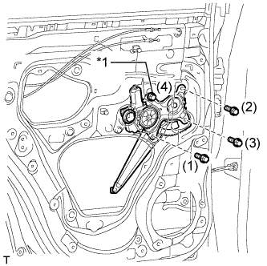
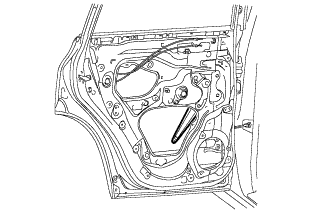
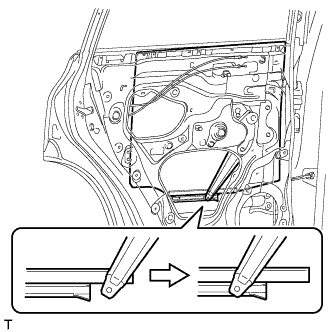
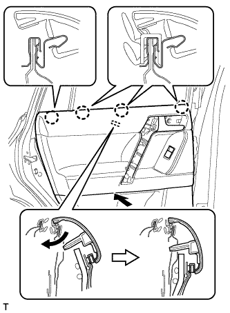

ЭЛЕКТРОДВИГАТЕЛЬ СТЕКЛОПОДЪЕМНИКА ЗАДНЕЙ ДВЕРИ > УСТАНОВКА |
| 1. УСТАНОВИТЕ ЭЛЕКТРОДВИГАТЕЛЬ СТЕКЛОПОДЪЕМНИКА ЛЕВОЙ ЗАДНЕЙ ДВЕРИ В СБОРЕ |
Нанесите универсальную консистентную смазку на все трущиеся и вращающиеся детали электродвигателя стеклоподъемника.
Закрепите электродвигатель стеклоподъемника 3 винтами с помощью торцевого ключа "TORX" T25.
| 2. УСТАНОВИТЕ СТЕКЛОПОДЪЕМНИК ЛЕВОЙ ЗАДНЕЙ ДВЕРИ |
Нанесите на рабочие поверхности трения стеклоподъемника задней двери в сборе универсальную консистентную смазку.
Вверните болт временного крепления в стеклоподъемник задней двери в сборе.
|  |
Временно установите стеклоподъемник задней двери и закрепите его болтом временного крепления.
| *1 | Болт временного крепления |
Временно вверните 3 болта и затем затяните 3 болта и болт временного крепления.
| 3. УСТАНОВИТЕ СТЕКЛО ЗАДНЕЙ ЛЕВОЙ ДВЕРИ В СБОРЕ |
Подсоедините провод к отрицательному (-) выводу аккумуляторной батареи и разъему электродвигателя стеклоподъемника задней двери.
|  |
Подсоедините переключатель электрического стеклоподъемника в сборе и сместите рычаг стеклоподъемника таким образом, чтобы ролик на рычаге был виден через технологическое отверстие.
Отсоедините переключатель электрического стеклоподъемника в сборе и разъем электродвигателя стеклоподъемника задней двери.
Отсоедините провод от отрицательного (-) вывода аккумуляторной батареи.
|  |
Вставьте стекло задней двери в панель задней двери вдоль направляющей стекла задней двери в направлении, указанном на рисунке стрелками.
| 4. УСТАНОВИТЕ НЕОПУСКНОЕ СТЕКЛО ЛЕВОЙ ЗАДНЕЙ ДВЕРИ |
 |
Установите неопускное стекло задней двери вместе с уплотнителем неопускного стекла задней двери в направлении, указанном на рисунке стрелкой.
| 5. УСТАНОВИТЕ ПОПЕРЕЧИНУ ОКНА ЛЕВОЙ ЗАДНЕЙ ДВЕРИ В СБОРЕ |
Установите поперечину окна задней двери в сборе сверху вниз.
Установите на направляющую стекла поперечину окна задней двери.
Вверните болт временного крепления в поперечину окна задней двери.
Установите поперечину окна задней двери в сборе.
Вверните 2 болта и винт.
Затяните болт временного крепления, чтобы установить поперечину окна задней двери в сборе.
| 6. УСТАНОВИТЕ НАПРАВЛЯЮЩУЮ СТЕКЛА ЛЕВОЙ ЗАДНЕЙ ДВЕРИ |
Установите направляющую стекла.
| 7. УСТАНОВИТЕ КРЫШКУ ТЕХНОЛОГИЧЕСКОГО ОТВЕРСТИЯ ЗАДНЕЙ ДВЕРИ |
Наклейте новую бутиловую ленту на панель задней двери.
 |
Пропустите трос дистанционного управления замком задней двери и внутренний трос замка задней двери через новую крышку технологического отверстия задней двери.
Закрепите крышку технологического отверстия задней двери, используя контрольные точки на панели задней двери.
| *1 | Контрольная точка |
Подсоедините разъем.
Установите жгут проводов задней двери и закрепите его 2 хомутами.
| 8. УСТАНОВИТЕ ЗАДНИЙ ДИНАМИК |
 |
Временно установите динамик, введя в зацепление 2 захвата динамика с панелью двери.
Установите задний динамик и закрепите его 3 винтами в порядке, показанном на рисунке.
Подсоедините разъем.
| 9. УСТАНОВИТЕ ВНУТРЕННИЙ УПЛОТНИТЕЛЬ СТЕКЛА ЛЕВОЙ ЗАДНЕЙ ДВЕРИ |
 |
Введите в зацепление 3 захвата, чтобы установить внутренний уплотнитель стекла задней двери, как показано на рисунке.
| 10. УСТАНОВИТЕ ПАНЕЛЬ ОБЛИЦОВКИ ЛЕВОЙ ЗАДНЕЙ ДВЕРИ |
 |
Установите зажим на дверную панель.
Подсоедините трос дистанционного управления замком задней двери в сборе и внутренний трос замка задней двери в сборе.
Подсоедините все разъемы.
|  |
Закрепите панель облицовки задней двери с помощью 4 захватов на внутреннем уплотнителе стекла задней двери, как показано на рисунке.
Введите в зацепление 9 фиксаторов и установите панель облицовки задней двери в сборе.
Вверните 3 винта.
| 11. УСТАНОВИТЕ ЛЕВУЮ НАКЛАДКУ ВЕРХНЕГО ПОРУЧНЯ |
 |
Введите в зацепление 8 захватов и установите облицовку верхнего поручня.
| 12. УСТАНОВИТЕ ДЕРЖАТЕЛЬ ВНУТРЕННЕЙ РУЧКИ ЛЕВОЙ ДВЕРИ № 2 |
 |
Введите в зацепление 3 захвата, чтобы установить оправу внутренней ручки задней двери.
| 13. ПОДСОЕДИНИТЕ ПРОВОД К ОТРИЦАТЕЛЬНОМУ ВЫВОДУ АККУМУЛЯТОРНОЙ БАТАРЕИ |
| 14. ИНИЦИАЛИЗИРУЙТЕ СИСТЕМУ УПРАВЛЕНИЯ ЭЛЕКТРИЧЕСКИМИ СТЕКЛОПОДЪЕМНИКАМИ |
Выполните инициализацию системы управления электрическими стеклоподъемниками (Нажмите здесь).